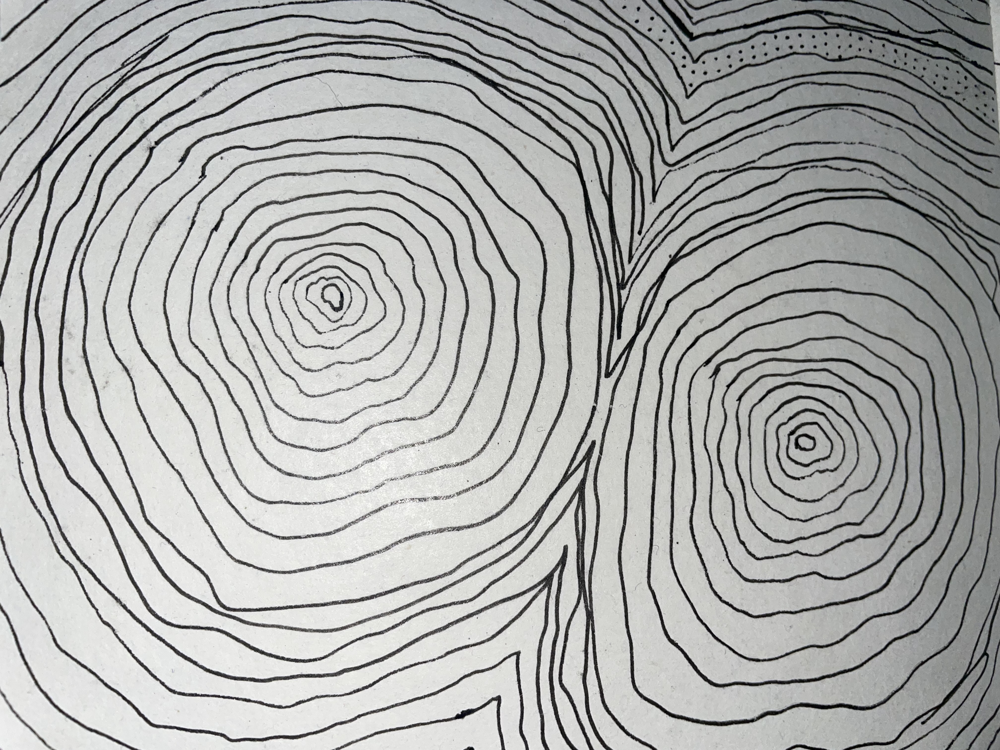
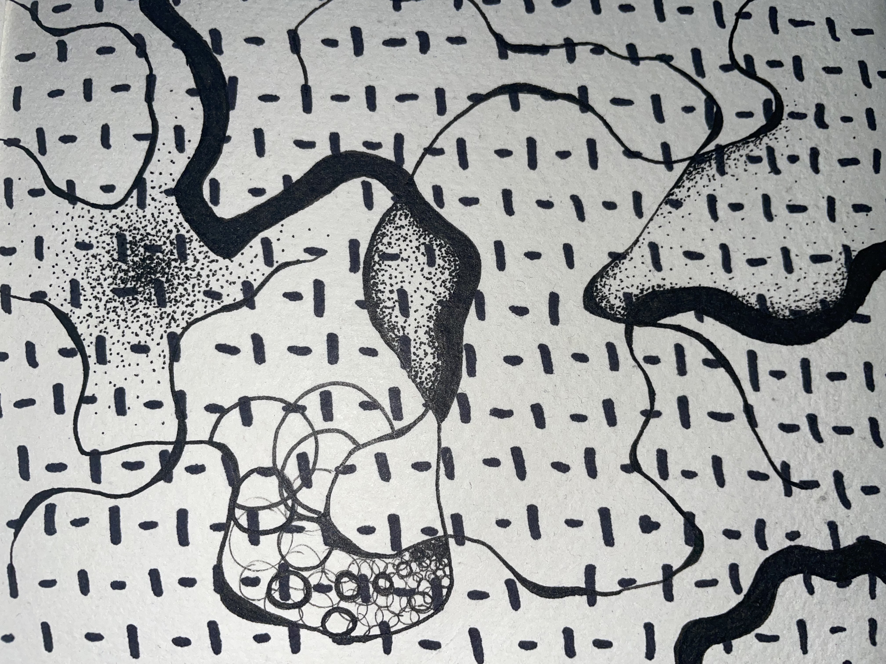
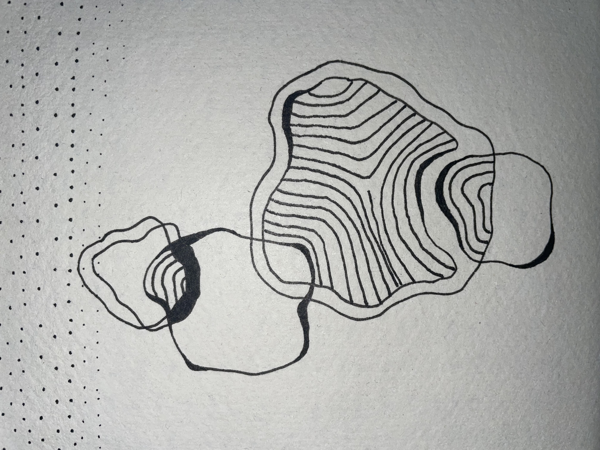

This is where you can find all the ideas and processes used to realise this project.
I switched from my intial idea after encountering problems in a separate module (Computational Practices: Visualisation & Sensing). In that class I also wanted to create a physical sculpture, and realised my own limitations due to never having processed large amounts of data before, and a general lack of experience with physical computing and Arduino. This led me to decide a screen-based animation would be more feasible and rewarding.
Moving forward, the plan is to create a web scraper that uses an API from one of the aforementioned marine biology organisations. The data that my scraper captures can be used to affect a visual animation that takes aesthetic references from deep sea creatures. This visualiser will be displayed somewhere on this site.
  These are some sketches for how I want visual outputs to turn out.
So far I have tried web scraping to get the data, and plotting different equations in order to represent data. But the equations I've plotted have so far been unconnected to any data to do with my topic. I need to:
This will most likely end up as a system of Python and JavaScript programs passing information back and forth between them.
Note: The rest of my planning is iterative and reactive based on each experiment listed above, and documented within their respective pages.